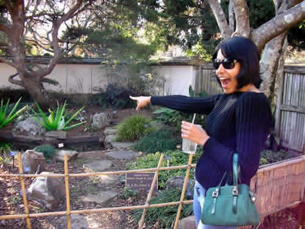

At long last, Leena has been liberated from Dille! Well, that's not necessarily a bad thing, those girls are tight, but she's been given her own Friends Page! Also, she's got that sexy picture as seen above. She's hot, no doubt about it!
Leena and I met on a magical evening, during my freshman year. Greg and Co. went to Tasty World one night, and Leena showed up with Dille, and I got a chance to talk to someone who wasn't all about getting shit-faced drunk! Back in those pre-alcohol days, Leena and I were like peas n' carrots. Oddly enough, she was the second person I ever came out to (as crazy as it sounds, it's true). We were walking to Bel-Jean, and I told her I was gay, and though I think she knew, she should feel flattered to know that I felt she was important enough to tell.
Fun Leena memories: Being all spiteful of Greg in her room in Church when she started dating John (but I love John!), many a' Country Music Wednesday night at O-house with the gang, that time I grabbed her cell phone and left a suggestive voicemail for a guy she had a crush on at the time and I made her "list" (I remember telling her, "If I'm going to be on the list, I want to be number one!"), hating that bastard Ilya (remember that twisted affair??), that night at Aspen after Leena got back from New Zealand and I was getting drunk and Missy walked in and fell flat on her face (that was sweet!), and recent drunk dancing at New Year's, where Leena looked especially sexy because she was all graduated and glowing!

| "Look at the tree! LeenaK is hungry! LeenaK wants to eat the tree! Vegetables are yummy...Leenak likes veggies...and peanut butter..." |

Dille and Leena had "Stupid Girl." Sans Dille, I suppose Leena is a bit "fizzier" than most...
Get Busy with the Fizzy
Well I might just consider this
If you don't let me down
If you can keep me happy
Well you can stick around
Now I don't care for sycophants
They drive me round the bend
But if you can't control yourself
Then let's just keep good friends
Let's make out in the back of your car
Let's go driving and toddling around
We can always get lost in a crowd
Are you ready to get deep down?
Now there's something you should know about
I'm chronically depressed
I internalize my hatred
And sacrifice myself
Now I am busy Saturday
But I am free tonight
And I might have to sort you out
If you don't do it right
Let's make out in the back of your car
Let's go driving and toddling around
We can always get lost in a crowd
Are you ready to get deep down?
Get Busy with the fizzy baby
Get Busy with the fizzy baby
Get Busy with the fizzy baby
Let's make out in the back of your car
Let's go driving and toddling around
We can always get lost in a crowd
Are you ready to get deep down?
Get Busy with the fizzy baby
Get Busy with the fizzy baby
Get Busy with the fizzy baby
Get Busy with the fizzy baby
Get Busy with the fizzy baby
Get Busy with the fizzy baby